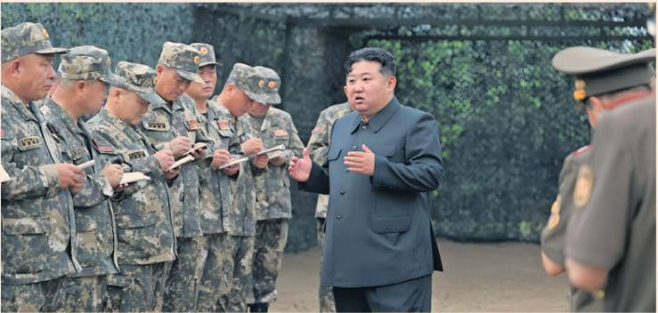
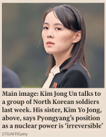

North Korea has said relations between its leader, Kim Jong Un, and President Donald Trump are "not bad", signalling a willingness to enter talks with the US administration for the first time.
Kim's sister, Kim Yo Jong, a senior regime official, said a resumption of dialogue with Washington was possible, adding that the "personal relationship between our head of state and the present US president is not bad", North Korean state media reported yesterday.
But she insisted that any US attempt to persuade her country to give up its nuclear weapons would be regarded as "nothing but a mockery", highlighting North Korea's military strength.
"The recognition of the irreversible position of [North Korea] as a nuclear weapons state and the hard fact that its capabilities and geopolitical environment have radically changed should be a prerequisite for predicting and thinking about everything in the future," Kim Yo Jong said, according to North Korea's state news agency.
Trump, who met Kim Jong Un on three occasions during his first term as president, claimed in March that his administration was in "communication" with Pyongyang. He also described North Korea as a "big nuclear nation" and praised Kim as a "very smart guy".
But Pyongyang appeared to ignore Trump's overtures.
Analysts noted that Kim had left a summit with Trump in Hanoi in 2019 bitterly disappointed after the collapse of negotiations.
North Korea is far less isolated than it was during Trump's first term as a result of worsening US-China relations and Pyongyang's deepening ties to Moscow after Russia's full-scale invasion of Ukraine in 2022.
Jeongmin Kim, executive director of Seoul-based information service Korea Risk Group, said that despite North Korea's stronger military and diplomatic position, the prospect of even tacit US recognition of its right to possess nuclear weapons remained a tantalising reward.
"From Pyongyang's perspective, North Korea being treated as a serious nuclear power on a par with Russia and China is a prize worth pursuing."
She added that Kim Yo Jong's apparent openness to the resumption of talks with the US stood in contrast to her brusque dismissal of South Korean efforts to engage.
Lee Jae Myung, South Korea's new leftwing president, has made a series of conciliatory gestures in recent weeks, ordering his country's military to cease broadcasts across the inter-Korean border and likening the historic adversaries' relationship to a troubled marriage in need of counselling.
Kim Yo Jong mocked Seoul's "sweet remarks" on Monday, accusing Lee's government of "pretending they do all sorts of righteous things to attract our attention".
She also condemned annual joint US-South Korean military exercises due next month as "aggressive".
Jeongmin Kim said North Korea's rejection of Lee's charm offensive was, in effect, "bidding up the price" to improve inter-Korean relations.
"The trap has been laid for Lee," she added. "If he continues his outreach efforts then he will look naive but if he tries to convince the Americans to take a softer line he will look weak, and if he shifts to a harder line then he will look insincere"